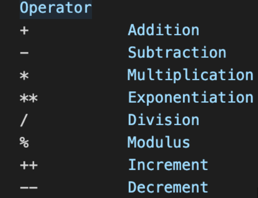
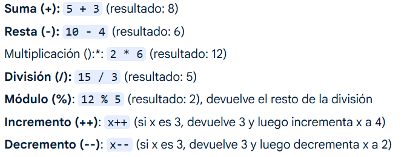

Los operadores aritméticos se utilizan para realizar operaciones matemáticas básicas en JavaScript. Entre los más comunes están la suma, resta, multiplicación, división y módulo.
Los operadores lógicos permiten combinar expresiones booleanas para controlar el flujo de programas mediante condiciones.En JavaScript, los operadores aritméticos y lógicos son herramientas esenciales para realizar cálculos y tomar decisiones en el código. Los operadores aritméticos se utilizan para realizar operaciones matemáticas, mientras que los operadores lógicos combinan condiciones para evaluar expresiones complejas. 
Los operadores de comparación permiten comparar dos valores y devuelven un valor booleano (true o false).En JavaScript, los operadores aritméticos se utilizan para realizar operaciones matemáticas, mientras que los operadores de comparación se utilizan para comparar valores y devolver un resultado booleano (verdadero o falso).
Los operadores aritméticos, lógicos y de comparación son fundamentales para crear lógica en los programas JavaScript. Permiten realizar cálculos, tomar decisiones y controlar el flujo de ejecución de manera eficiente.En JavaScript, los operadores aritméticos permiten realizar operaciones matemáticas básicas. Estos operadores se clasifican en binarios (requieren dos operandos) y unarios (requieren un operando). Los operadores binarios comunes son: suma (+), resta (-), multiplicación (), división (/), módulo (%) y exponenciación (*). Los operadores unarios comunes son: incremento (++) y decremento (--).